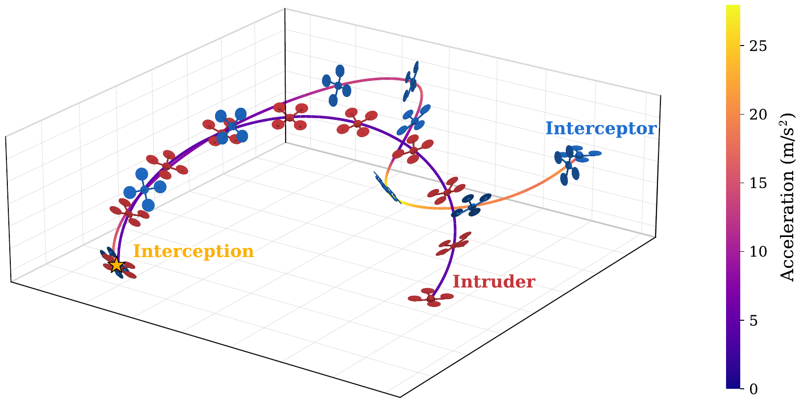
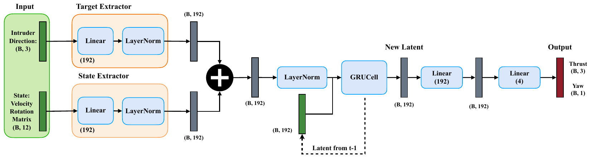
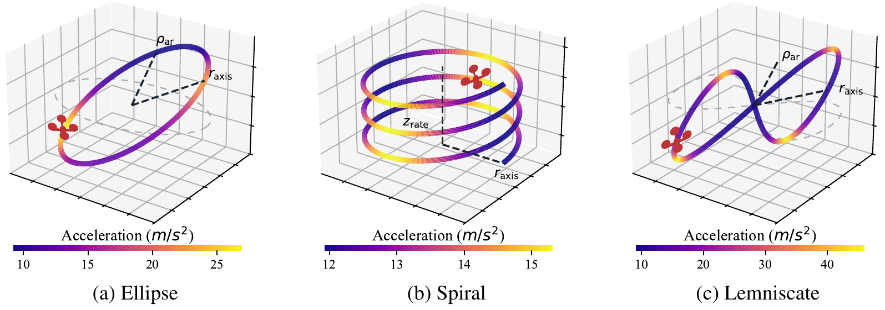
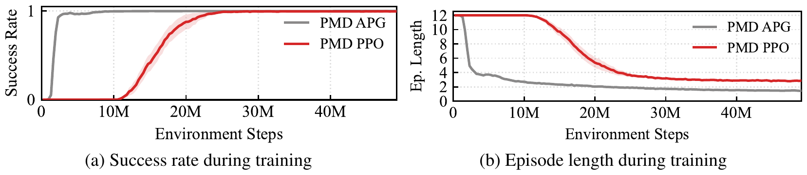
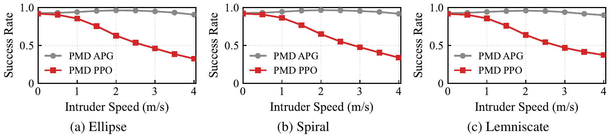
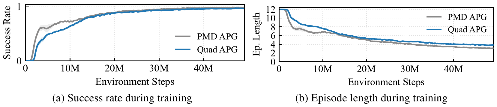
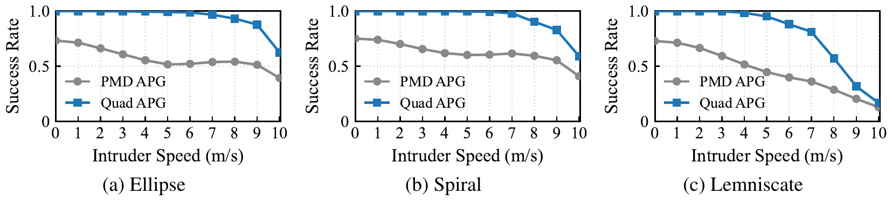
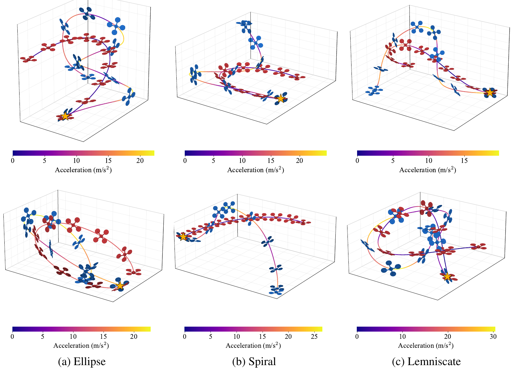
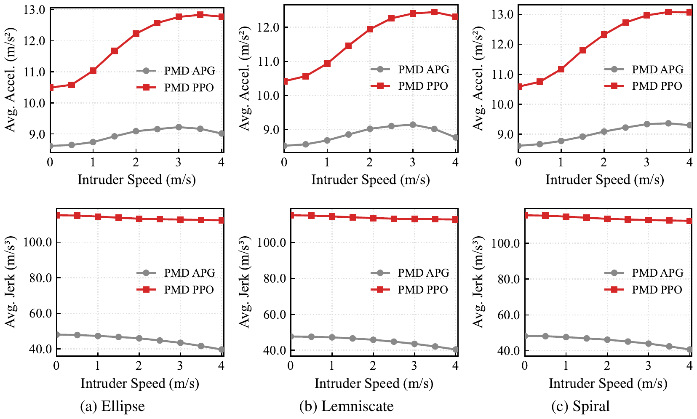
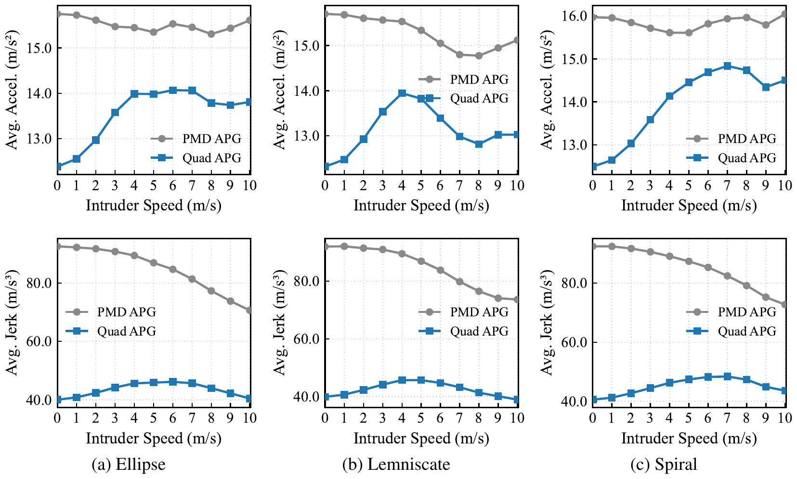

| Title | Learning Agile Intruder Interception using Differentiable Quadrotor Dynamics（基于可微分四旋翼动力学的敏捷入侵者拦截学习） |
| Authors | Michael Anoruo†,*、Xiaoyu Tian†,*（共同一作），Abhishek Rathod†、Timothy Naudet§、Thomas Canchola§、Eric Sturzinger§、Kshitij Goel†、Wennie Tabib† |
| Affiliation | †. 卡内基梅隆大学（Carnegie Mellon University，rislab 实验室）；§. 人工智能集成中心（Artificial Intelligence Integration Center, AI2C） |
| Venue | arXiv preprint，2026 年 7 月 2 日，arXiv:2607.02472v1 [cs.RO]，17 页（含附录） |
| DOI / Links | arXiv:2607.02472 | 项目主页：rislab.github.io/projects/catchrl.html | 开源代码：github.com/rislab/catchrl |
| Keywords | Aerial Robots、Deep Reinforcement Learning、Interception（作者标注；但方法本质是「解析策略梯度 + 可微分物理」，并非采样式 RL，见 §6.4） |
| TL;DR | 用仅含 3D 单位方向向量（无距离、无相对位置）的被动视觉观测，通过解析策略梯度（APG）反向传播穿过完整 6-DoF 四旋翼动力学（刚体动力学 + 二次阻力 + 转子一阶延迟 + RK4 积分），学习拦截机动。损失函数由平行导引（parallel navigation）的几何量分解成 6 项（视线对齐 + 接近速度 + 加速度/jerk/限速平滑 + 机头对准），全部逐 step 稠密可微。在 0–10 m/s 的入侵者速度扫描下，用完整四旋翼动力学训练的策略比点质量模型（PMD）平均高 30%（椭圆/螺旋/双纽线三类轨迹上分别高 37% / 33% / 31%）。图 7 显示 Quad APG 在 ≤5 m/s 时成功率接近 100%，8 m/s 时约 58%–97%（双纽线最差、椭圆最好），10 m/s 降到 15%–65%；同条件下 PMD APG 从 0 m/s 的约 72% 一路降到 10 m/s 的 15%–40%。注意：正文另有「8 m/s 时约 60%（PMD 约 30%）」的表述，与图 7 曲线口径不一致（见 §9.1）。训练耗时 137 分钟（RTX 5090），代码开源。 |
| Inspiration Source | What Insight It Inspired | Type |
|---|---|---|
| 平行导引 / 比例导引（Yuan 1948, Homing and Navigational Courses of Automatic Target-Seeking Devices）——导弹制导的经典律 | 把「拦截」从「到达某个点」的导航目标，改写为两个几何标量：视线角漂移 $m_t=\sin\angle(d_t, v_{rel,t})$ 与接近速度 $v_{c,t}=-\hat{d}_t^{\top}v_{rel,t}$。这一步把稀疏的「成功/失败」变成了稠密的可微监督，是整篇论文能成立的关键 | 数学 / 目标 |
| APG（Wiedemann et al. 2023）与可微分物理导航（Zhang et al. 2025, Nature Machine Intelligence） | 梯度可以直接穿过物理模型回到策略参数，无需采样估计策略梯度（零阶、高方差）。前人用它做「导航到设定点」，本文把它推到动态目标拦截这一强耦合任务，并顺手做了「模型复杂度该选多少」的消融 | 方法 |
| 非对称 Actor-Critic / 特权信息学习（privileged information；Lee et al. 2025 用特权信息做四旋翼导航） | 训练时把入侵者的真值位置与速度只用于算损失，绝不进入策略观测。既保证推理时只用 bearing，又让损失可以精确计算几何量——「特权信息放损失、不放输入」的一个干净的 APG 版本 | 训练策略 |
| Bearing-only 目标运动分析（TMA）/ 可观测性理论——单目纯方位测距的尺度模糊 | 承认距离不可观测，转而让 GRU 在时序上「积分」方位变化：本机机动 → 方位变化率 → 三角化出距离与横向速度。这解释了为什么必须用 RNN 而不是 MLP，也解释了为什么入侵者「匀速」对本文是重要的简化 | 估计理论 |
| 控制受限的动力学可行性检验（推力上限、$a_z\ge -g$ 类约束） | 评估用的螺旋/双纽线轨迹不能随便采样——必须用四旋翼模型反解「这条轨迹到底飞不飞得出来」（$A_{\max}=\eta N_m F_m/m$，$\eta=0.6$）。否则「失败」可能只是任务本身不可行，评估结论会被污染 | 实验设计 |
flowchart LR
subgraph PER["感知（推理时）"]
CAM["多相机 360°"]
DET["目标检测"]
end
subgraph POL["策略网络（仅方位）"]
ENC["双 MLP 编码"]
GRU["GRU 192 维"]
HEAD["动作头 4 维"]
end
subgraph PLANT["可微刚体动力学（本文创新）"]
PD["PD + 转子延迟"]
RIGID["刚体 + RK4"]
end
PROP["本体状态 v, R"]
CAM -->|"图像"| DET
DET -->|"仅方向，无距离"| ENC
PROP -->|"速度/姿态"| ENC
ENC -->|"各 192 维"| GRU
GRU -->|"隐状态"| HEAD
HEAD -->|"推力 + 偏航"| PD
PD -->|"转速指令"| RIGID
classDef perc fill:#fef7ed,stroke:#f59e0b,stroke-width:2px,color:#92400e
classDef pol fill:#e8f0fe,stroke:#3b82f6,stroke-width:2px,color:#1d4ed8
classDef phys fill:#f0ebfd,stroke:#8b5cf6,stroke-width:2px,color:#6d28d9
classDef state fill:#e6faf8,stroke:#14b8a6,stroke-width:2px,color:#0f766e
class CAM,DET perc
class PROP state
class ENC,GRU,HEAD pol
class PD,RIGID phys
配色：橙色 = 推理时的被动视觉，青色 = 本体状态（速度与姿态），蓝色 = 策略网络，紫色 = 本文创新的落点——不让动力学当"黑箱环境"，而是让整条链路可微。感知只给得出方向：360° 相机覆盖 + 检测器把入侵者投到单位球上，得到一条无距离的单位向量。策略把这条方向与本体速度、旋转矩阵分开编码成两个 192 维向量，相加后交给 192 维 GRU——循环状态在时间上积分方向序列，隐式估计入侵者的速度与加速度，这正是"只给方位也能提前量"的来源。输出 4 维（3 维质量归一化推力 + 1 维偏航），由机载 PD 变成转速，再经转子一阶延迟与二次推力模型进入刚体动力学。同一张图在训练时整条可反传，在推理时退化为"相机 + 检测器 + 网络 + PD"。
flowchart LR
OBS["观测 v, R, 方向"] --> POL["策略网络"]
POL -->|"推力 + 偏航"| CMD["动作指令"]
CMD --> PD["PD 姿态控制"]
PD --> SIM["可微刚体 + RK4"]
SIM -.->|"下一状态"| OBS
SIM --> LOSS["6 项特权损失"]
GT["入侵者真值"] -->|"仅训练可见"| LOSS
LOSS --> BPTT["BPTT 梯度"]
BPTT -.->|"∇θ 更新"| POL
classDef obs fill:#fef7ed,stroke:#f59e0b,stroke-width:2px,color:#92400e
classDef pol fill:#e8f0fe,stroke:#3b82f6,stroke-width:2px,color:#1d4ed8
classDef sim fill:#f0ebfd,stroke:#8b5cf6,stroke-width:2px,color:#6d28d9
classDef loss fill:#ffeaf0,stroke:#f43f5e,stroke-width:2px,color:#be123c
class OBS,GT obs
class POL,CMD pol
class PD,SIM sim
class LOSS,BPTT loss
训练回路由三段构成。前向：20 ms 控制步、64 步 horizon，观测与动作都在"起始帧"里表达，因此策略行为不依赖固定世界坐标系。特权损失：6 项全部逐 step 稠密可微——视线漂移、接近速度（平行导引的两条几何量）＋ 加速度、jerk、限速、机头对准四项正则；其中前两项要用入侵者的真实位置与速度，但这份真值只进损失、不进策略输入，所以部署时的观测约束是真的。BPTT：梯度沿 64 步穿过 RK4、二次阻力与转子延迟一路回到 θ（AdamW、梯度裁剪 5.0）。512 个并行环境同步推进，1500 次更新约 49.15 M 步。两条虚线就是这套"可微物理"的全部要求：下一状态要能回灌成观测，梯度要能穿过每一步动力学回到策略。
| 类别 | 内容 | 维度 / 取值 |
|---|---|---|
| 输入（推理） | 到入侵者的单位方向向量 $\hat{d}_t$（由 360° 相机 + 检测器给出）；本体线速度 $v_t$；本体到起始帧的旋转矩阵 $R_t$（展平 9 维） | $3+3+9=15$ 维（论文写作 12 维状态 + 3 维方向） |
| 输出 | 质量归一化推力矢量 $a^{cmd}_t\in\mathbb{R}^3$ + 偏航角 $\psi_t\in\mathbb{R}$，由机载 PD 姿态控制器跟踪 | 4 维连续动作 |
| 训练时的额外信号 | 入侵者真值位置 $p^{tgt}_t$ 与速度 $v^{tgt}_t$——只进损失，不进观测 | 特权信息（privileged） |
| 目标 | 在无距离观测条件下，于 12 s 内把与入侵者的距离压到 0.3 m 以内（碰撞式拦截）；入侵者速度最高 10 m/s | 成功率 / 拦截时间 / 控制努力 |
这是一个「部分可观测 + 强非线性执行器约束」的制导控制学习问题，而不是经典意义上的导航或轨迹跟踪。三个特征决定了它的难度：(1) 观测是纯方位的（尺度不可观测），必须靠时序滤波补出距离与相对速度；(2) 目标在动且速度接近甚至超过拦截者的巡航速度，属于「追及」而非「到达」；(3) 执行器受限——推力上限、姿态带宽、18.6 ms 的电机时间常数，使「想加速就能加速」不成立。论文用可微分物理 + 解析策略梯度求解，训练全在自建的 PyTorch GPU 并行仿真中完成，没有实机实验（作者在 Limitations 中明确承认）。
表头用英文，正文用中文
| Prior Method | Core Idea | Why It Fails |
|---|---|---|
| RL-based interception with relative position（Gavin 2026；Roncero 2026 追逃；Zheng 2026；Pierre 2023；Logiewa 2023） | 用 PPO/SAC 等模型无关 RL，以「相对位置 / 距离 + 本体状态」为观测，奖励塑形为接近目标或捕获 | 观测假设不成立：真实被动单目拿不到相对位置。若强行用估计器补，估计误差与延迟会直接毁掉高速拦截；且零阶梯度样本效率低、奖励塑形敏感。论文的 PMD PPO 基线在 4 m/s 时成功率已跌到约 30%，且加速度/jerk 显著高于 APG（图 9） |
| LiDAR-based detection & interception（Vrba 2025；Pliska 2024） | 机载 LiDAR 检测飞行目标，配合规划/捕获机构完成拦截 | 主动传感会暴露自身：LiDAR 发射红外脉冲，可被激光告警装置探测到；成本与重量也高。对「反无人机」这类对抗场景，隐蔽性本身就是需求 |
| Image-Based Visual Servoing interception（Yan 2025 TIE；Guo 2026） | 用图像特征误差直接闭环，几何控制器保证收敛 | 验证轨迹过于温和：只在「仅变高度」或「xy 平面」的轨迹上验证，没有 3D 敏捷机动；且 IBVS 的收敛性依赖目标始终在视场内、特征不丢失——高速 3D 机动下这两条都很脆弱 |
| Jamming / net capture（Souli 2023/2025；Rothe 2025；Ma 2025） | 干扰 GNSS 链路，或用多机张网捕获 | 对 GPS-denied 系统无效（视觉惯性导航不受 GNSS 干扰）；张网方案需要多机精确协同 + 差分 GNSS 定位 + 外部目标检测，部署门槛极高 |
| Bearing-only / bearing-angle TMA（目标运动分析） | 用方位（或方位 + 张角）序列估计目标运动，再交给制导律 | 估计与控制分离：先估计再控制的两段式架构在高速下会引入延迟与误差累积；且纯方位估计的可观测性依赖本机机动，估计器本身无法保证「为可观测性而机动」 |
| Differentiable-physics navigation（Zhang 2025 NMI；Lee 2025；Li 2026） | APG + 点质量可微分模型训练视觉导航策略，样本效率极高 | 任务不同，结论不可迁移：导航是「到达设定点」，点质量模型足够；拦截要榨干机动能力，点质量模型学不出姿态-推力耦合。本文用同一套 APG 框架做消融，证明拦截任务需要刚体动力学 |
方法的骨架是「可微分仿真 + 解析策略梯度 + 制导几何损失」三件套，流程如下：
| 参数 | 取值 | 含义 | 为什么取这个值 |
|---|---|---|---|
| 控制步长 $\Delta t_{ctrl}$ | 0.02 s | 策略推理与控制周期（50 Hz） | 与真实机载策略频率同量级；物理子步 2.5 ms（每控制步 8 个 RK4 子步）保证积分精度 |
| 回合上限 $T_{ep}$ | 600 步 = 12 s | 单回合最大时长 | 既够「从 10 m 外追上 4 m/s 目标」，又不至于让训练回合过长、BPTT 显存爆掉 |
| 捕获半径 $c_r$ | 0.3 m | 判成功的距离阈值 | 约等于一架大型入侵者机体的物理尺寸——「撞上」而不是「靠近」 |
| 逃逸半径 $e_r$ | 100 m | 判失败的距离阈值 | 防止「目标飞远、策略绕圈」的退化解；同时给出 10 m 初始框的 10 倍余量 |
| 初始位姿框 $s_{box}$ | 10 m | 拦截者初始位置/朝向的随机化范围 | 覆盖「目标已在附近」到「需要加速追击」的多种初始几何 |
| 并行环境 / 更新次数 | 512 / 1500 | 训练规模 | 约 4915 万环境步（1500×64×512），与 PMD/PPO 基线完全对齐以保证公平 |
| horizon $H$ | 64 步 | BPTT 的可微窗口长度 | 1.28 s——足够覆盖「发现→转向→加速→接触」的关键相位；再长则显存与梯度稳定性都变差 |
| 拦截者质量 | 2.65 kg / 1.0 kg | 两个 benchmark 用不同质量 | 2.65 kg（推重比 2.7）对应「大平台」；1.0 kg（推重比约 7）对应「敏捷平台」，用于把入侵者速度扫到 10 m/s |
| 转子时间常数 $\tau_r$ | 0.0186 s | 电机一阶延迟 | 实测值；与 20 ms 控制周期同量级，是「机动能力」的真实瓶颈之一 |
| 评价环境数 | 110,000 | 评估 rollout 总数 | 把成功率的统计误差压到 ~0.1% 量级，使 30% 的差距不可能由噪声解释 |
| 训练耗时 | Quad 137 min / PMD 10 min / PPO 7 min | RTX 5090 单卡 | 刚体动力学 + RK4 的代价约 13.7 倍；这是「保真度换性能」的直接成本 |
| 对比维度 | APG + 刚体动力学（本文） | APG + 点质量（PMD 基线） | 模型无关 RL（PPO） | 经典制导 / IBVS |
|---|---|---|---|---|
| 梯度来源 | 一阶解析（穿过物理模型） | 一阶解析（穿过简化模型） | 零阶（采样估计） | 无学习（解析闭环） |
| 观测假设 | 仅方位（$\hat d$）+ 本体状态 | 仅方位 | 通常需相对位置/距离 | 图像特征或方位 |
| 执行器约束 | 显式建模（推力上限、姿态带宽、电机延迟） | 无（加速度任意可得） | 由仿真器隐式给出 | 由控制器保证，但策略本身不知情 |
| 样本效率 | 中（137 min / 4915 万步） | 高（10 min） | 低（7 min 但需更多步才能收敛） | 无需训练 |
| 渐近性能（能量化处给图 7 读数） | ≤5 m/s ≈100%；8 m/s 58–97%；10 m/s 15–65% | 0 m/s ≈72%，8 m/s ≈30–52%，10 m/s 15–40% | 4 m/s 约 30%（点质量动力学下） | 未在同等 3D 敏捷轨迹上验证 |
| 主要风险 | 训练成本高、需可微仿真器 | 保真度不足，学不会耦合机动 | 奖励塑形 + 采样效率 + 观测假设 | 可观测性/视场/饱和下的鲁棒性 |
理解这篇论文需要四块基础知识：解析策略梯度为什么比零阶策略梯度省样本、平行导引为什么「两个标量」就足以定义拦截、纯方位观测下距离如何从时间中恢复、以及为什么拦截任务的动力学保真度不能省。最后补一节关于六维损失权重如何被系统地搜出来。
为什么「可微」在拦截任务上比在导航任务上更值钱：导航任务的奖励（离目标多近、有没有撞）相对平滑，零阶方法还能凑合；拦截任务的成败高度依赖末段几十毫秒的几何关系——差 0.2 s 的提前量就从「撞上」变成「擦过」。这种「末段敏感性」使得采样估计的梯度几乎全是噪声，而一阶梯度能精确告诉网络「0.8 s 前的那个侧向动作导致了现在的脱靶」。这就是为什么本文即便付出 13.7 倍训练时间也要保留刚体动力学与 BPTT。
设拦截者与目标的相对位置 $d_t$、相对速度 $v_{rel,t}$。若两者保持碰撞航向（constant bearing），则视线方向不变、距离线性缩小——这就是平行导引（parallel navigation / constant-bearing course），也是比例导引（PN）的几何基础。它等价于两个条件同时成立：
输入：视线角速率 $\dot\lambda$（需要距离/相对速度）、接近速度 $v_c$。
律：$a_c=N\,v_c\,\dot\lambda$，$N\approx3\sim5$。
优点：最优性有理论保证（对匀速目标），实现简单，可解释。
在本文场景的困难：被动单目测不到 $\dot\lambda$ 的绝对值（缺 $\rho$）；且 PN 只给加速度指令，不解决「姿态如何跟上」「推力是否够」的执行器问题。
输入：$\hat d_t$、$v_t$、$R_t$（全部可测）。
损失：$\lambda_{align}\lVert\hat d\times\hat v_{rel}\rVert+\lambda_{close}\hat d^{\top}v_{rel}$，逐 step 稠密。
优点：不依赖距离；梯度穿过刚体动力学，自动学会「先倾斜再加速」的执行器协调；GRU 隐式补出 $\rho$ 与 $v_{rel}$。
代价：可解释性下降——学到的不是 $a=Nv_c\dot\lambda$ 这种闭式律，而是「网络 + 隐状态 + 六项权重」的复合映射。
被动单目的量测是方位 $\hat d_t\in S^2$。对静止目标、本机已知运动，方位序列可三角化出距离；对运动目标，还需要可观的本机机动来分离「目标在动」与「自己在动」。这就是 bearing-only TMA 的经典结论：单时刻距离不可观测，但方位变化率 + 已知自身运动 = 可观测。
Zhang 2025（NMI）在视觉导航任务上的结论是：点质量模型提供了更平滑的优化景观，收敛最快、渐近性能最好，刚体模型反而更慢。本文却在同一套 APG 框架下得出相反的结论。这不是矛盾，而是任务对执行器自由度的需求不同：
| 维度 | 导航 / 到达设定点 | 拦截 / 追上高速机动目标 |
|---|---|---|
| 核心需求 | 路径尽量平滑、无碰撞地到达 | 在有限时间内让相对速度与视线共线，需要持续的大侧向加速度 |
| 执行器 | 推力方向 ≈ 期望加速度方向，近似成立 | 推力只能沿机体 z 轴 → 必须先倾斜机体；倾斜需要力矩与时间 → 与「急转弯」强耦合 |
| 点质量模型的缺陷 | 几乎无影响（加速度瞬时可得） | 给出一个物理上不存在的「任意方向瞬时加速度」，策略学不会姿态-推力协调，末段修正不足 |
| 实测差异 | 渐近性能相当，PMD 更快 | 成功率差 30%+（图 7）；且 PMD 策略的控制努力更大（图 10：jerk 高约 2 倍） |
| 训练成本 | 分钟级 | 137 min（约 13.7 倍） |
更深一层的解释：为什么保真模型反而「更省力」。直觉上，模型越真实、约束越硬，策略应该越「笨拙」；但图 10 显示 Quad APG 的平均加速度与 jerk 都低于 PMD APG。原因是：点质量策略习惯用「大加速度 + 频繁修正」来补偿它不知道的动力学滞后，一旦部署到真实刚体上，这些修正全部变成过冲与振荡；而刚体策略从一开始就知道「推力有上限、姿态要时间、电机有延迟」，因此倾向于更早、更平滑地建立碰撞航向。这与「用真实约束训练出来的控制器更从容」的控制论直觉一致。
值得注意的是，作者对「全局尺度不变性」的处理很聪明：$\lambda\to\alpha\lambda$ 可以被学习率吸收，因此只有比值有意义；把 $\lambda_{align}$ 锚定为 5，就消掉了这个退化方向。类似地，「学习率衰减比」等有界比值也取对数均匀先验。这些细节说明：损失权重的搜索不是玄学调参，而是先做无量纲化与对称性分析，再在低维有效空间里搜索。
论文原图截图。图片保存至 figures/ 子目录，命名 fig1.png ~ fig10.png。

请将截图保存为figures/fig1.png本图展示了：策略在仿真中的一次典型拦截。蓝色为拦截者、红色为入侵者（巡航 5.8 m/s），两者轨迹用加速度着色（深紫=低、黄=高，色标 0–27 m/s²），黄色星号标出碰撞点。两机均在无障碍的开阔空域。

请将截图保存为figures/fig2.png本图展示了：一个刻意保持极简的循环策略网络。设计上只有三个决策值得注意。

请将截图保存为figures/fig3.png本图展示了：评估用轨迹族的几何与运动学难度。只有椭圆用于训练，螺旋与双纽线是纯泛化测试（训练时从未见过）。

请将截图保存为figures/fig4.png本图展示了：在相同观测空间、相同动作空间、相同损失函数下，一阶梯度与零阶梯度的样本效率差距。阴影为 10 个随机种子的标准误。

请将截图保存为figures/fig5.png本图展示了：把速度作为自变量后，两种方法的差距如何随难度单调张开。

请将截图保存为figures/fig6.png本图展示了：一个反直觉但非常重要的结果——用完整刚体动力学训练，并不会显著拖慢收敛。

请将截图保存为figures/fig7.png本图展示了论文的核心定量结论：在 1 kg 敏捷平台、0–10 m/s 速度扫描下，动力学保真度的价值随目标速度单调放大。

请将截图保存为figures/fig8.png本图展示了：同一策略在 2 行 × 3 列共 6 个不同初始条件下的定性行为，验证「不是只会在一种几何下成功」。星号为碰撞点，色标为加速度（0–20 / 25 / 30 m/s²）。

请将截图保存为figures/fig9.png本图展示了：只统计成功回合的控制努力（即「就算 PPO 偶尔成功了，它付出了什么代价」）。上排为平均加速度，下排为平均 jerk，均为点质量动力学训练、刚体动力学评估。

请将截图保存为figures/fig10.png本图展示了本文最反直觉的一条结论：用更真实的动力学训练，学到的策略反而更平滑、更省力。上排加速度、下排 jerk，横轴 0–10 m/s。
| 数据问题 | 潜在困难 | 严重程度 |
|---|---|---|
| 方位测量噪声（检测框中心抖动） | 策略的末段增益很高（$L_{align}$ 在近距离时对角度极敏感）。0.5° 的角度噪声在 3 m 处约等于 2.6 cm 的横向误差，但在 30 m 处只有 0.26 m——近距离时噪声的影响被放大，恰好是拦截最关键的阶段。论文完全未建模 | ★★★★★ |
| 检测延迟与漏检 | 真实的检测管线有 30–80 ms 延迟，相当于 1.5–4 个控制步。策略在训练中从未见过「观测滞后」，部署时会出现系统性过冲。漏检更致命：GRU 的隐状态会「记住」目标在该方向，直到新观测把它拉回 | ★★★★★ |
| 入侵者机动（非匀速） | 匀速假设让 TMA 变成一个低维良态问题。一旦目标加速，方位序列会出现「无法用匀速模型解释」的残差，隐式估计器可能把它误判为「本机机动」，导致错误制导 | ★★★★ |
| 训练/评估轨迹分布偏移 | 训练只用椭圆（半轴 4–8 m、轴比 0.5–1.5、倾斜 ±0.5 rad、速度 ±10 m/s），评估却用螺旋与双纽线。图 7 显示双纽线成功率最低——分布外泛化仍有明显代价 | ★★★ |
| 随机种子方差 | 训练曲线（图 4/6）显示 10 个种子的标准误在早期较大；最终性能的种子间方差未在正文以误差棒形式给出，只有 Fig. 4/6 的阴影 | ★★ |
| 评估轨迹的可行域 | 轨迹池依赖 $A_{\max}$、$\eta=0.6$、$\beta=0.6$ 这些工程参数。若 $\eta$ 取值偏乐观，评估集会包含不可行轨迹，成功率被系统性低估；偏保守则评估集太简单，高估性能 | ★★★ |
| 参考文献 | 为什么重要 |
|---|---|
| Zhang et al. (2025) — Learning vision-based agile flight via differentiable physics. Nature Machine Intelligence 7(6):954–966 | 本文的方法论母体：APG + 点质量可微分模型 + 时间梯度衰减。本文在「导航 vs 拦截」的任务差异上推翻其「点质量更好」的结论——两篇对照阅读，能看清「模型复杂度应随任务而变」这一层。也是本仓库 3.Learning vision-based agile flight via differentiable physics/ 的主角。 |
| Wiedemann et al. (2023) — Training efficient controllers via analytic policy gradient. arXiv:2209.13052 | APG 的原始论文。理解「为什么一阶梯度能 train 出控制器」「BPTT 的数值稳定性怎么处理」的必读前置。本文的所有训练细节（梯度裁剪、学习率衰减、并行环境同步）都源自这一脉。 |
| Yuan (1948) — Homing and navigational courses of automatic target-seeking devices. J. Applied Physics 19(12):1122–1128 | 平行导引的原始文献（70 多年前的制导理论）。本文的两项制导损失就是它的几何重述。读它你会意识到：很多「新」的学习方法，本质上是在重新发现经典控制里的最优性条件。 |
| Yan et al. (2025) — Precise interception flight targets by image-based visual servoing of multicopter. IEEE TIE 72(11):11499–11509 | IBVS 拦截的代表工作（本仓库 4. High-Speed Interception... 的主角）。与本文形成「经典控制 vs 学习」的对照：它保证收敛但有视场/轨迹限制，本文灵活但依赖仿真与训练。两者结合（IBVS 的可解释性 + 学习的敏捷性）是明显的机会。 |
| Lee et al. (2025) — Quadrotor navigation using reinforcement learning with privileged information. arXiv:2509.08177 | 「特权信息」在四旋翼学习中的系统用法（教师-学生、非对称 actor-critic）。本文只用了「特权损失」这一半，蒸馏那一半还没用——这正是 §9.2 建议的扩展方向。 |
| Vrba et al. (2025) — On onboard LiDAR-based flying object detection. IEEE T-RO 41:593–611；Pliska et al. (2024) — Towards safe mid-air drone interception. IEEE RA-L 9(10):8810–8817 | 主动传感路线的代表作。理解「为什么本文坚持被动视觉」需要知道 LiDAR 路线的成本、重量与可被探测这三个约束。也是「反无人机」系统级设计的参考。 |
| 本项目代码：github.com/rislab/catchrl | 论文声称的开源实现（PyTorch 并行仿真 + APG 训练 + 轨迹生成）。想复现「图 7 的 30% 差距」或改观测（加张角/角速率），从这里入手最快。建议先读轨迹生成（Algorithm 1）与动力学模块，再读训练循环。 |
对象：arXiv:2607.02472v1（2026-07-02）正文 §3「Methodology」与附录 A.1–A.4。 公式范围：论文全部 16 个编号公式——式 (1)–(4)（正文第 4 页，可微四旋翼动力学）、式 (5)–(9)（第 4–5 页，目标函数）、式 (10)–(15)（附录 A.1，第 12–13 页，入侵者轨迹族与可行性判据）、式 (16)（附录 A.2，超参搜索目标）——以及 Algorithm 1（第 13 页，可行轨迹池生成）。论文有名字但没有印出公式的核心组件（二次推力模型、混控矩阵、PD 姿态控制器、点质量 PMD 模型、BPTT/伴随梯度流、RK4 雅可比）在 §6、§7、§14、§15 以「补充式 (D1)–(D8)」严格化。方法：本文不复述论文文字，而是：
_derivation_work\intruder\fulltext.txt 的文本抽取，并经（a）同一公式在正文不同位置的重复出现、（b）上下文语义、（c）数值核算三路互证。文本抽取质量良好（公式结构完整、下标清晰），但建议人工复核以下页面：第 4 页（式 (1)–(4) 的矩阵/上下标）、第 5 页（式 (6)–(9) 的 $\hat v_{rel}$ 是否戴帽）、第 12–13 页（式 (10)–(15) 的 $\lVert c(s)\rVert$ 指数、式 (13) 的 $N_m$）、第 16–17 页（Table 2–6 数值，尤其 Table 6 的 RPM 单位与 Table 3 的 $g_{max}$）。| 公式 | 内容 | 逐式核对结论 |
|---|---|---|
| (1) | 位置/速度动力学（刚体 + 阻力 + 重力） | ✅ 牛顿第二定律直推成立；⚠️ 阻力 $d(v)$ 放在 $R_{wb}(\cdot)$ 内的帧约定有歧义（§2.3） |
| (2) | 四元数运动学 + 欧拉方程 | ✅ 推导成立；⚠️ 四元数乘法约定（Hamilton/JPL）未声明（§3.1） |
| (3) | 二次 + 线性复合阻力 | ✅ 形式标准；⚠️ $k_{d,1}=0.1$ 比典型值偏大 2–3 倍（§4.3） |
| (4) | 转子一阶延迟 | ✅ 解析解与离散化核算一致（每控制步响应 66%）；⚠️ Table 6 RPM「rev/s」疑为 rev/min（§5.3） |
| (5) | 六项加权损失 | ✅ 尺度不变性论证成立；⚠️ $\lambda_{close}$ vs $\lambda_{closing}$ 命名不一、$v_{des}$ 全文未给值（§8） |
| (6) | $L_{align}=\lVert \hat d\times\hat v_{rel}\rVert=\sin\angle$ | ✅ 叉积-正弦恒等式成立；与 $\dot\lambda$ 的关系推导成立；⚠️ $v_{rel}\to 0$ 奇异（§9.2） |
| (7) | $L_{close}=-\hat d^\top v_{rel}$ | ✅ $L_{close}=-\dot\rho$ 恒等成立，符号约定正确（§9.3） |
| (8) | 加速度/jerk/限速正则 | ✅ 形式标准；⚠️ $j_t$ 的离散定义、$v_{des}$ 未印明（§10.1） |
| (9) | 偏航对准 $L_{yaw}$ | ✅ 推导出 $L_{yaw}=-\lVert\hat d_{xy}\rVert\cos(\psi-\psi_{los})$，物理正确（§10.2） |
| (10) | 入侵者参数曲线族 | ✅ 与 Table 1 三族一致；⚠️ Table 1 只写 $(\phi,\theta)$ 而 Table 4 写 rpy，是否含偏航含糊（§11.1） |
| (11) | $a_{net}=\frac{T_c}{m}b-g\hat z$ | ✅ 由式 (1) 置 $d=0$ 直接推出，两处自洽（§11.5） |
| (12) | 可行性双判据 | ✅ 从推力可达集 $\{Ab-g\hat z: 0\le A\le A_{max}, b_z\ge0\}$ 推出（§11.5） |
| (13) | $A_{max}=\eta N_m F_m/m$ | ✅ 核算：2.65 kg→15.9 m/s²、1.0 kg→42.1 m/s²；⚠️ 与「推重比 2.7」的关系有歧义（§11.5） |
| (14) | 逐点可行性 + 下降余量 | ✅ 推导成立；$\beta=0.6$ ⟺ 推力 z 分量 $\ge 0.4g$（§11.6） |
| (15) | 恒速曲线的加速度 $a(s)$ | ✅ 两次链式求导逐步重推逐项一致；$a\perp v$ 校验通过（§11.3） |
| (16) | $J=300(1-\text{SR})+L_{p99}$ | ✅ 「先成功率后时间」的优先级逻辑核算成立（§13） |
| 算法 1 | 可行轨迹池生成（三段式） | ✅ 逻辑自洽；逐行解读见 §12 |
| 补充式 (D1)–(D8) | 推力/混控/PD/PMD/BPTT/RK4 | ⚠️ 论文未印明，本文按标准做法重建并逐项标注假设（§6、§7、§14、§15） |
| 螺旋约束 $v_{tgt}^2\kappa_{max}\le mg$ | 附录 A.1 无编号式 | ❌ 量纲不闭合（左 m/s²、右 N），应为 $\le g$ 或 $\le A_{max}$（§11.7） |
| 符号 | 含义 | 单位 / 文中取值 |
|---|---|---|
| $p,v,q,\omega$ | 世界系位置、速度；姿态四元数；机体系角速度 | m、m/s、无（单位范数）、rad/s |
| $R_{wb}$ | 机体系→世界系旋转矩阵（由 $q$ 生成，$R_{wb}\in SO(3)$） | 无 |
| $R_t$（观测） | 机体系→起始帧旋转矩阵（正文：body-to-start） | 无 |
| $f=[0,0,u_1]^\top$ | 机体系集体推力；$u_1=\sum_i F_i$ | N |
| $\tau$ | 机体系总力矩（滚转/俯仰/偏航） | N·m |
| $J$ | 惯量矩阵（Table 6：$I_{xx},I_{yy},I_{zz}=0.0143,0.0175,0.021$；$I_{xy},I_{yz},I_{xz}=2.91\times10^{-7},-4.25\times10^{-5},-1.91\times10^{-5}$） | kg·m² |
| $g$ | 重力加速度 9.807（Table 5/6） | m/s² |
| $d(v)$ | 气动阻力 $=-k_{d,1}\lVert v\rVert v-k_{d,2}v$；$k_{d,1}=0.1$ (1/m)、$k_{d,2}=0.1$ (1/s) | N |
| $\Omega_i,\Omega_{cmd,i}$ | 第 $i$ 转子实际/指令转速（$i=1..4$） | rev/min（文中印 rev/s，疑误，见 §5.3） |
| $\tau_r$ | 转子时间常数 0.0186 s | s |
| $F_i,\ f_2,f_1,f_0$ | 单转子推力 $F_i=f_2\Omega_i^2+f_1\Omega_i+f_0$；系数未给出（§6.1） | N |
| $\ell_{arm},\theta_m,k_{moment}$ | 臂长 0.15 m；电机展开角 0.7854 rad(45°)；力矩系数 0.0108（§6.2） | m、rad、m（疑） |
| $a_{cmd},\psi$ | 策略输出：质量归一化推力指令（=期望加速度）与偏航角（起始帧） | m/s²、rad |
| $d_t,v_{rel,t},\hat d_t$ | 相对位置 $p^{tgt}-p^{agt}$、相对速度 $v^{tgt}-v^{agt}$、单位视线 $d/\lVert d\rVert$ | m、m/s、无 |
| $m_t\equiv L_{align},\ v_{c,t}\equiv-L_{close}$ | 视线漂移量、接近速度（式 (6)(7)） | 无、m/s |
| $\lambda_{align..yaw}$ | 损失权重 $5.0,1.07,1.5\times10^{-3},1.96\times10^{-4},0.4,0.064$（Table 2） | 无 |
| $c_r,e_r,s_{box}$ | 捕获半径 0.3 m、逃逸半径 100 m、初始框 10 m | m |
| $\Delta t_{sim},\Delta t_{ctrl},T_{ep}$ | 2.5 ms 物理子步、0.02 s 控制步（8 子步/步）、600 步（12 s）回合上限 | s、步 |
| $v_{tgt},r_{axis},\rho_{ar},z_{rate}$ | 入侵者恒速、半轴、轴比、螺旋爬升率（Table 1/4） | m/s、m、无、m/rad |
| $A_{max},\eta,N_m,F_m,\beta$ | 可用加速度上限、折减系数 0.6、转子数 4、单转子最大推力、下降余量 0.6 | m/s²、无、无、N、无 |
| $\hat b_{1,t}$ | 机体 x 轴在世界系水平面投影的单位向量（式 (9)） | 无 |
状态计数：论文说状态为 $[p,v,q,\omega]$（3+3+4+3=13 维）。但转子转速 $\Omega_{1..4}$ 有自己的微分方程 (4)，BPTT 时它必须参与计算图——实际可微状态是 17 维 $[p,v,q,\omega,\Omega_1,\Omega_2,\Omega_3,\Omega_4]$（§14.4 的线性化按 17 维展开）。论文把转子当作「动力学内部的辅助变量」叙述，不算错，但读者实现时不要漏掉它对梯度流的贡献。
对质心写牛顿第二定律（只在惯性系 $W$ 成立）：
$$ m\left.\frac{dv}{dt}\right|_W = F^{W}_{\text{总}} = \underbrace{R_{wb}\big(f+d(v)\big)}_{\text{机体系力旋转到世界系}} + \underbrace{(-mg\,\hat z)}_{\text{重力}} $$
两边除以 $m$ 并配 $\dot p=v$（位置的定义）即得式 (1)。关键约定检查：$f=[0,0,u_1]^\top$ 是机体系向量，$R_{wb}$ 是体→世界映射——所以 $R_{wb}f$ 把「沿机体 z 的推力」转成世界系向量。悬停时 $R_{wb}=I$，需要 $u_1=mg$：$f=(0,0,mg)$，$R_{wb}f-g\hat z=0$ ✅ 物理自洽（推力沿 $+z_B$ 向上）。
式 (1) 把 $d(v)$ 放在 $R_{wb}(\cdot)$ 里面，即阻力被当作机体系向量。但 $v$（状态里的速度）是世界系的。于是有两种读法：
从「quadrotor 阻力通常沿速度反方向」的常识看，作者意图几乎肯定是读法 A，但记号 $d(v)$ 没有区分 $v$ 与 $v_B$，且未说明。官方代码（github.com/rislab/catchrl）能否澄清这一点是复现时第一个要查的地方。本文后续核算均按读法 A。
第 1 步：四元数乘法定义（Hamilton 约定，也是多数机器人库的约定）：
$$ (s_1,\mathbf v_1)\otimes(s_2,\mathbf v_2)=\Big(s_1s_2-\mathbf v_1\cdot\mathbf v_2,\ s_1\mathbf v_2+s_2\mathbf v_1+\mathbf v_1\times\mathbf v_2\Big) $$
第 2 步：把 $\omega$ 写成纯虚四元数 $(0,\omega)$，代入：
$$ q\otimes(0,\omega)=\Big(-\mathbf q\cdot\omega,\ q_0\,\omega+\mathbf q\times\omega\Big) $$
第 3 步：矩阵形式（写成 $\dot q=\tfrac12\Omega(\omega)\,q$，$\Omega$ 是 4×4 反对称矩阵）：
$$ \dot q=\frac12\begin{bmatrix}0&-\omega_x&-\omega_y&-\omega_z\\ \omega_x&0&\omega_z&-\omega_y\\ \omega_y&-\omega_z&0&\omega_x\\ \omega_z&\omega_y&-\omega_x&0\end{bmatrix}q \qquad\Big(\Omega(\omega)\text{ 反对称 ⟹ 保范数}\Big) $$
第 4 步：范数保持的严格证明（四元数必须是单位四元数，验证微分方程不破坏这一点）：
$$ \frac{d}{dt}\lVert q\rVert^2 = 2q^\top\dot q = q^\top\big(q\otimes(0,\omega)\big) = q_0(-\mathbf q\cdot\omega)+\mathbf q\cdot(q_0\omega+\mathbf q\times\omega) = -q_0\,\mathbf q\cdot\omega + q_0\,\mathbf q\cdot\omega + \underbrace{\mathbf q\cdot(\mathbf q\times\omega)}_{=0}=0 $$
✅ 连续时间下范数严格守恒。但RK4 离散积分会有数值漂移（RK4 保能量不保范数），实现时每子步归一化 $q\leftarrow q/\lVert q\rVert$ 是标准做法——论文未提及，复现者务必加。
第 5 步：约定检查（容易踩坑处）。式 $\dot q=\tfrac12 q\otimes\omega$ 与旋转公式 $v_W=R_{wb}(q)\,v_B$、矩阵导数 $\dot R_{wb}=R_{wb}[\omega]_\times$（$[\omega]_\times$ 为机体系角速度叉乘矩阵）严格配套（Hamilton 右乘约定；若用 JPL/左乘约定则为 $\dot q=\tfrac12\omega\otimes q$ 且 $R$ 含义互换）。论文没有声明采用哪种约定。一致性判据：悬停时 $q=(1,0,0,0)$，$R_{wb}=I$，推力轴 $R_{wb}\hat z_B=\hat z$ 向上 ✅——两种约定在四元数↔矩阵映射正确实现时都能满足，但混用会得到姿态取逆的错误模型。这是复现式 (1)+(2) 时第二处要对着代码核实的地方。
第 1 步：角动量定理。 机体系角动量 $H=J\omega$。角动量定理只在惯性系成立：
$$ \left.\frac{dH}{dt}\right|_W=\tau \quad\Longrightarrow\quad \left.\frac{dH}{dt}\right|_B+\omega\times H=\tau \quad\Longrightarrow\quad J\dot\omega+\omega\times J\omega=\tau $$
（第二项是转动参考系的牵连项；$\dot\omega$ 是分量直接求导。）移项即得式 (2)。
第 2 步：$\omega\times J\omega$ 的逐分量展开（$J$ 含非对角项，按 Table 6 数值）。 记 $J=[J_{ij}]$，$H=J\omega$：
$$ H=\begin{pmatrix}J_{xx}p+J_{xy}q+J_{xz}r\\ J_{xy}p+J_{yy}q+J_{yz}r\\ J_{xz}p+J_{yz}q+J_{zz}r\end{pmatrix},\qquad \omega\times H=\begin{pmatrix}qH_z-rH_y\\ rH_x-pH_z\\ pH_y-qH_x\end{pmatrix} $$
（注：惯量积 $I_{xy},I_{yz},I_{xz}$ 的符号约定——$J=[I_{xx},-I_{xy},-I_{xz};\ldots]$ 还是对称正形式——论文未说明；Table 6 给的交叉项量级 $10^{-7}\sim10^{-5}$，两种约定在数值上差异可忽略，但符号错会引入小的常值力矩偏差。）
第 3 步：数值量级核算（证明「非线性项」不可忽略）。 取极端机动角速率 $\omega=(10,0,10)$ rad/s（急滚+急偏航，敏捷拦截中常见），用 Table 6 的 $J$（交叉项取零近似）：$J\omega=(0.143,\ 0,\ 0.208)$，
$$ \omega\times J\omega=(0\cdot 0.208-10\cdot 0,\ 10\cdot 0.143-10\cdot 0.208,\ 10\cdot 0-0\cdot 0.143)=(0,\ -0.651,\ 0)\ \text{N·m} $$
而单轴最大差分力矩（§6.2 推导）约 $\ell_{arm}\frac{\sqrt2}{2}\cdot 2F_m\approx 0.106\times 35\approx 3.7$ N·m。即 10 rad/s 时陀螺项吃掉俯仰力矩预算的 ~18%；20 rad/s 时按 $\omega^2$ 增长到 ~70%。这就是「拦截需要非线性四旋翼动力学」的定量理由：点质量模型完全丢掉这项，策略学不到「高速滚转/偏航会互相拖拽」的耦合。✅ 与正文论断（§3.2、图 7 的 30% 差距）互为印证。
把质量想象成「中心机体 + 4 个转子质量 $m_r$ 在 $\ell_{arm}=0.15$ m 处（45° 布局）」：转子贡献 $I_{zz}^{rot}=4m_r\ell^2$、$I_{xx}^{rot}=I_{yy}^{rot}=2m_r\ell^2$（X 构型）。由 $I_{zz}=0.021$ 反推 $m_r=0.021/(4\times0.0225)=0.233$ kg/转子（电机+桨+电调，合理量级）。转子对 $I_{xx}$ 的贡献 $2\times0.233\times0.0225=0.0105$，与给定 $I_{xx}=0.0143$ 差 0.0038——由中心机体（电池等）的竖向质量分布补足。用恒等式 $I_{xx}+I_{yy}-I_{zz}=2\sum_i m_i z_i^2$（平行轴定理，$z_i$ 为质点相对质心的竖向坐标）核算：$0.0143+0.0175-0.021=0.0108$ ⟹ $\sum m_i z_i^2=0.0054$，例如 0.5 kg 的电池在 $z\approx0.1$ m 处恰为 $0.5\times0.01=0.005$ ✅。Table 6 的惯量张量与「2.65 kg 平台 + 0.15 m 臂」的物理图像完全吻合，未发现数值异常。（$I_{yy}>I_{xx}$ 的 22% 差反映电池/载荷的左右不对称，也合理。）
解析解（$\Omega_{cmd}$ 在 $[0,t]$ 内恒定）：分离变量
$$ \frac{d(\Omega_i-\Omega_{cmd})}{\Omega_i-\Omega_{cmd}}=-\frac{dt}{\tau_r}\ \Longrightarrow\ \Omega_i(t)=\Omega_{cmd,i}+\big(\Omega_i(0)-\Omega_{cmd,i}\big)e^{-t/\tau_r} $$
控制步内的精确离散化（$\Delta t_{ctrl}=0.02$ s 内指令恒定，这正是仿真器的结构）：
$$ \Omega_{k+1}=\Omega_{cmd}+\big(\Omega_k-\Omega_{cmd}\big)e^{-\Delta t_{ctrl}/\tau_r} $$
Table 6 的「RPM range $[\Omega_{min},\Omega_{max}]=[2970,20965]$」标注单位为 rev/s。核算：20965 rev/s = 1,257,900 rev/min，2970 rev/s = 178,200 rev/min——任何商用无刷电机都不可能达到（桨尖会超声速解体）。合理读法是 rev/min：20965 RPM ≈ 2195 rad/s、2970 RPM ≈ 311 rad/s。用 §6.1 的推力模型反推（$F_m=17.54$ N、$f_1=f_0=0$ 假设）可得悬停转速 $\Omega_h=\sqrt{mg/4f_2}\approx 1336$ rad/s ≈ 12,760 RPM，落在 [2970, 20965] 区间中部 ✅——rev/min 解读自洽，rev/s 解读物理荒谬。判定：单位笔误，应为 rev/min（或数值为 rad/s 系下的笔误），建议对照官方代码/第 17 页原文复核。
正文 §3.2 只说「The forces and torques are then generated via a quadratic thrust model and mixer matrix」，没有给出公式。以下按标准四旋翼建模重建，并用 Table 6 参数逐项核算。以下 D1–D3 是本文的补充式，非论文原式。
数值识别（假设 $f_1=f_0=0$，用「推重比 2.7 + 质量 2.65 kg」与 $\Omega_{max}=20965$ RPM=2195.4 rad/s）：总推力上限 $T_{max}=2.7\times2.65\times9.807=70.16$ N ⟹ 单转子 $F_m=17.54$ N ⟹
$$ f_2=\frac{F_m}{\Omega_{max}^2}=\frac{17.54}{2195.4^2}=3.64\times10^{-6}\ \text{N·s}^2/\text{rad}^2 $$
悬停转速：$mg/4=f_2\Omega_h^2$ ⟹ $\Omega_h=\sqrt{6.497/3.64\times10^{-6}}=1336$ rad/s = 12,760 RPM（在 [2970, 20965] 区间内 ✅）。1 kg 平台悬停 7,834 RPM。这些数字与真实 5 英寸级四旋翼（悬停 8k–13k RPM）一致，佐证 §5.3 的 rev/min 判断。
设第 $i$ 个转子在 $x_B$–$y_B$ 平面内的方位角为 $\theta_i=\theta_m+(i-1)\tfrac{\pi}{2}$（$\theta_m=0.7854$ rad = 45°，即 X 构型：$45^\circ,135^\circ,225^\circ,315^\circ$），力臂 $\mathbf r_i=\ell_{arm}[\cos\theta_i,\ \sin\theta_i,\ 0]^\top$，推力沿 $+z_B$：$\mathbf F_i=F_i\,\hat z_B$。单个转子产生的力矩：
$$ \boldsymbol\tau_i=\mathbf r_i\times\mathbf F_i=\ell_{arm}F_i\begin{pmatrix}\sin\theta_i\\ -\cos\theta_i\\ 0\end{pmatrix} $$
（逐步：$(x,y,0)\times(0,0,F)=(yF-0,\ 0-xF,\ 0-0)=(yF,-xF,0)$，代入 $x=\ell\cos\theta,\ y=\ell\sin\theta$。）叠加四个转子并加入反扭矩项：
$$ u_1=\sum_{i=1}^{4}F_i,\qquad \tau_x=\ell_{arm}\sum_i F_i\sin\theta_i,\qquad \tau_y=-\ell_{arm}\sum_i F_i\cos\theta_i,\qquad \tau_z=k_{moment}\sum_i \sigma_i F_i \tag{D2} $$
其中 $\sigma_i=\pm1$ 为桨旋转方向的交错符号（$\tau_z$ 来自电机反扭矩 $k_\tau\Omega_i^2$ 与推力的比值 $k_{moment}\approx k_\tau/f_2$）。代入 $\theta_m=\pi/4$ 的四个方位角（$\sin\theta_i=\frac{\sqrt2}{2}(1,1,-1,-1)$，$\cos\theta_i=\frac{\sqrt2}{2}(1,-1,-1,1)$）：
$$ \tau_x=\ell_{arm}\frac{\sqrt2}{2}\big(F_1+F_2-F_3-F_4\big),\qquad \tau_y=\ell_{arm}\frac{\sqrt2}{2}\big(-F_1+F_2+F_3-F_4\big),\qquad \tau_z=k_{moment}\big(F_1-F_2+F_3-F_4\big) $$
（$\tau_z$ 的符号按 $1,3$ 正转、$2,4$ 反转的常见编号。）
数值核算：$\ell_{arm}\sqrt2/2=0.106$ m。悬停（$F_i=mg/4$）时 $\tau_x=\tau_y=0$ ✅（X 构型天然平衡）。最大滚转力矩：$F_1=F_2=F_m,\ F_3=F_4=0$ ⟹ $\tau_{x,max}=0.106\times2F_m=3.72$ N·m（2.65 kg 平台）——与 §3.3 陀螺项的量级比较正是那里用到的数字。$k_{moment}=0.0108$ 的量纲：若 $\tau_z=k_{moment}\sum\sigma_iF_i$ 则 $[k_{moment}]=$ m，0.0108 m=1.08 cm，与 5 英寸桨的 $k_\tau/k_f$ 典型比值 0.01–0.02 m 一致 ✅；若作用在 $\Omega_i^2$ 上则单位为 N·m·s²/rad²。论文未说明，两者数值上需对照代码核实——标注为重建不确定项。
以上 D1+D2 给出「指令 → 力/力矩」的完整映射：$\Omega_{cmd}\xrightarrow{(4)}\Omega\xrightarrow{D1}F_i\xrightarrow{D2}(u_1,\tau)\xrightarrow{(1)(2)}(\dot v,\dot\omega)$。反向看，四旋翼的世界系净加速度只能取 $\frac{T_c}{m}b-g\hat z$ 的形式（$b$ 单位推力轴、$0\le T_c\le N_mF_m$），这就是附录式 (11)–(13) 的实质（§11.5 严格化）。
正文说「These outputs are tracked using a PD attitude controller [24]」（[24]=Mellinger, Michael & Kumar, IJRR 2012）。论文没有给出控制器公式；Table 6 给了四组增益：PD pos. gain (x,y,z) 6.25, 6.25, 16.0、PD vel. gain 5.0, 5.0, 8.0、PD rot. gain 110, 89, 70、PD ang. vel gain 20, 15, 15。以下按 Mellinger 结构重建（补充式，重建而非原文）：
重建自检：① 悬停（$a_{cmd}=0$）：$\hat b_{des}=\hat z$、$R_{des}=R_z(\psi)$，$u_1=mg$ ✅。② 水平加速 $a_{cmd}=(a,0,0)$：$\hat b_{des}=(a,\ 0,\ g)/\sqrt{a^2+g^2}$，机体需前倾 $\theta=\arctan(a/g)$——「先倾斜再加速」的四旋翼基本事实 ✅。③ $e_R$ 的李代数 $\tfrac12(R_{des}^\top R-R^\top R_{des})^\vee$ 在 $R\to R_{des}$ 时一阶等于轴角误差向量——Mellinger 原文的标准选择 ✅。
增益量纲核算：$K_R$ 的单位 N·m/rad：110 N·m/rad 的滚转刚度，配合 $I_{xx}=0.0143$，姿态环固有频率 $\omega_n=\sqrt{K_R/I_{xx}}=\sqrt{110/0.0143}=87.7$ rad/s ≈ 14 Hz；$K_\omega=20$ N·m/(rad/s)，阻尼比 $\zeta=K_\omega/(2\sqrt{K_RI})=20/(2\sqrt{110\times0.0143})=20/2.508=7.97$——严重过阻尼。这并非设计缺陷：$a_{cmd}$ 由策略给出且每 20 ms 更新一次，过阻尼姿态环保证「无超调跟踪 + 不激发高频振荡」，正好配合 $L_{jerk}$ 正则的意图 ✅。疑点：Table 6 的 pos/vel 增益（6.25/5.0/16/8）在正文的主回路里没有出现——策略直接输出 $a_{cmd}$ 而非位置指令。它们可能用于回合初始的悬停稳定或评估环境的复位。论文未说明，标注为「角色不明」。
论文说「The objective is nearly invariant to a global rescaling $\lambda\to\alpha\lambda$ absorbed into the policy step size: only the ratios of the weights matter」。证明：设 $\tilde L=\alpha L$，则 $\nabla_\theta\tilde L=\alpha\nabla_\theta L$；梯度下降 $\theta\leftarrow\theta-\eta\nabla_\theta\tilde L=\theta-\eta\alpha\nabla_\theta L$ 与「学习率改为 $\eta'=\eta\alpha$ 优化原 $L$」完全相同。因此 $(\lambda,\eta)$ 与 $(\alpha\lambda,\eta/\alpha)$ 是同一训练，$\lambda$ 的绝对尺度是冗余自由度 ⟹ 有效自由度为「6 个权重的比值 + 学习率」。论文把 $\lambda_{align}$ 锚定为 5 消除该退化方向——正确且必要，否则超参搜索会在无效方向上浪费预算。
各损失项的典型量级（按 1 kg 平台、$a_{cmd}\sim$ 数 m/s² 的巡航与机动段估计）× 权重：
| 项 | 典型量级（估计） | 权重 $\lambda$ | 加权贡献 $\lambda L$ | 角色 |
|---|---|---|---|---|
| $L_{align}=\sin\angle$ | $\sim0.2$（$12^\circ$ 视线漂移） | 5.0 | $\sim1.0$ | 制导主项 |
| $L_{close}=-\dot\rho$ | $\sim-5$（接近速度 5 m/s） | 1.07 | $\sim-5.4$ | 制导主项（负） |
| $L_{acc}=\lVert a\rVert^2$ | $\sim10^2$ | $1.5\times10^{-3}$ | $\sim0.15$ | 抑制饱和 |
| $L_{jerk}=\lVert j\rVert^2$ | $\sim10^3$–$10^4$（$\Delta a/\Delta t$ 的平方） | $1.96\times10^{-4}$ | $\sim0.2$–$2$ | 平滑/BPTT 稳定 |
| $L_{vmax}$（单边） | $0\sim10^2$ | 0.4 | $0\sim40$（仅在超速时） | 飞行包线 |
| $L_{yaw}$ | $[-1,1]$ | 0.064 | $\sim\pm0.03$ | 视场保持 |
结论：制导两项的加权贡献在 $\mathcal O(1–5)$ 量级主导；$L_{acc}/L_{jerk}$ 原始值大 2–4 个数量级，必须用小权重压回 $\mathcal O(0.1–1)$，否则「省力」会压死「拦截」。这套权重在量级上自洽 ✅。（注：$L_{close}$ 贡献为负——它是对「快接近」的奖励项，训练在最小化 $L_t$ 的意义下是「负值更优」，梯度下降照常处理，无需特殊符号翻转。）
两处不一致/缺失，如实指出：① 式 (5) 用 $\lambda_{close}$，Table 2 印成 $\lambda_{closing}$——命名不一致（无实质影响）；② $L_{vmax}=\max(0,\lVert v\rVert-v_{des})^2$ 的阈值 $v_{des}$ 在 Table 2–6 与全文任何位置都没有给值——复现者无法确定速度上限，这是一个实质性缺失参数。
恒等式 1（距离变化率）：$\rho=\lVert d\rVert$，$\rho^2=d\cdot d$，两边求导 $2\rho\dot\rho=2d\cdot v_{rel}$，故
$$ \dot\rho=\hat d^{\top}v_{rel} \tag{9.1} $$
恒等式 2（视线角速率）：$\hat d=d/\rho$，
$$ \dot{\hat d}=\frac{d}{dt}\frac{d}{\rho}=\frac{v_{rel}}{\rho}-\frac{d}{\rho^2}\dot\rho=\frac{1}{\rho}\Big(I-\hat d\hat d^{\top}\Big)v_{rel}\ \Longrightarrow\ \Big\lVert\dot{\hat d}\Big\rVert=\frac{\lVert\hat d\times v_{rel}\rVert}{\rho}=\frac{\lVert v_{rel}\rVert\sin\angle}{\rho} $$
（最后一步用 $\lVert(I-\hat d\hat d^\top)v_{rel}\rVert=\lVert\hat d\times v_{rel}\rVert$——投影与叉积的模长恒等。）
第 1 步：叉积-正弦恒等式。对任意向量 $a,b$：$\lVert a\times b\rVert^2=\lVert a\rVert^2\lVert b\rVert^2-(a\cdot b)^2=\lVert a\rVert^2\lVert b\rVert^2\sin^2\angle(a,b)$。取 $a=\hat d$、$b=\hat v_{rel}$（均为单位向量）：
$$ \Big\lVert\hat d\times\hat v_{rel}\Big\rVert=\sin\angle\big(\hat d,\hat v_{rel}\big)=\sin\angle\big(d,v_{rel}\big)\qquad\checkmark \tag{6 成立} $$
（角度相同是因为 $\hat d,\hat v_{rel}$ 分别是 $d,v_{rel}$ 的归一化，方向不变。）
第 2 步：与平行导引（PN）判据的关系。平行导引要求视线方向不漂移（constant bearing）⟺ $\dot{\hat d}=0$ ⟺ $d\times v_{rel}=0$ ⟺ $v_{rel}\parallel d$。由恒等式 2：
$$ L_{align}=\sin\angle=\frac{\rho\,\lVert\dot{\hat d}\rVert}{\lVert v_{rel}\rVert}\quad\Longleftrightarrow\quad \lVert\dot{\hat d}\rVert=\frac{\lVert v_{rel}\rVert}{\rho}L_{align} $$
经典 PN 用 $\dot\lambda\equiv\lVert\dot{\hat d}\rVert$ 乘接近速度做指令，但 $\dot\lambda$ 里含 $1/\rho$——纯方位观测下 $\rho$ 不可测，PN 无法直接实现。式 (6) 改用 $\hat v_{rel}$ 归一化，把 $1/\rho$ 换成了 $1/\lVert v_{rel}\rVert$ 的「自归一化」，损失信号与距离无关、只依赖两个方向。这正是论文说「vanishes when the relative velocity is aligned with the LOS」的严格含义，也是纯方位设置下最接近 PN 的可微替代 ✅。
由恒等式 1，$L_{close}=\hat d^\top v_{rel}=\dot\rho$ 就是距离变化率本身：接近时 $\rho$ 减小、$\dot\rho<0$。定义 $v_c=-L_{close}=-\dot\rho\ge0$ 为「接近速度」（论文符号）。所以「minimize $L_{close}$ ⟺ maximize $v_c$」——最小化一个为负的量 = 最大化其绝对值，论文特意提醒「note the sign」，这是复现时最容易搞反的地方。✅ 推导无问题。
捕获几何核算：若 $L_{align}=0$ 严格成立（碰撞航向）且 $v_c$ 恒定，则 $\rho(t)=\rho_0-v_ct$，相遇时间 $t_{go}=\rho_0/v_c$。以 $\rho_0=10$ m、$v_c=5$ m/s 计，$t_{go}=2$ s=100 控制步 < $T_{ep}=600$ ✅ 在回合长度内可达。捕获半径 $c_r=0.3$ m 意味「物理碰撞」而非「接近」。
损失通过 $d,v_{rel}$ 依赖状态 $x_t$（训练时入侵者轨迹已知，只有 $p^{agt},v^{agt}$ 可导）。逐项求导（$\hat u\equiv\hat v_{rel}$，$\theta=\angle(d,v_{rel})$，$\rho=\lVert d\rVert$）：
$$ \frac{\partial L_{close}}{\partial v^{agt}}=\hat d^{\top},\qquad \frac{\partial L_{close}}{\partial p^{agt}}=\frac{1}{\rho}\,v_{rel}^{\top}\Big(I-\hat d\hat d^{\top}\Big) $$
$$ \frac{\partial L_{align}}{\partial v^{agt}}=\frac{\hat d\cdot\hat u}{L_{align}\,\lVert v_{rel}\rVert}\Big(I-\hat u\hat u^{\top}\Big)\hat d,\qquad \frac{\partial L_{align}}{\partial p^{agt}}=\frac{\hat d\cdot\hat u}{L_{align}\,\rho}\Big(\hat u-(\hat d\cdot\hat u)\hat d\Big) $$
推导要点（$L_{align}=\sqrt{1-(\hat d\cdot\hat u)^2}$，链式法则）：$\partial L/\partial\hat u=-\frac{\hat d\cdot\hat u}{L}\hat d$；$\partial\hat u/\partial v_{rel}=(I-\hat u\hat u^\top)/\lVert v_{rel}\rVert$；$\partial\hat d/\partial d=(I-\hat d\hat d^\top)/\rho$；$\partial d/\partial p^{agt}=-I$；再合成。逐项验算：当 $\theta$ 很小时 $\lVert\partial L_{align}/\partial v^{agt}\rVert=\lvert\cos\theta\rvert/\lVert v_{rel}\rVert$ 有界，$\lVert\partial L_{align}/\partial p^{agt}\rVert=\lvert\cos\theta\rvert/\rho$ 有界——梯度不会爆炸，但两个制导项的位置梯度都 $\propto 1/\rho$。结论（论文未讨论的分析发现）：
机体 x 轴的世界系方向：$b_1=R_{wb}\,e_1$，水平投影 $b_{1,xy}=(b_{1x},b_{1y},0)$，归一化 $\hat b_1=b_{1,xy}/\lVert b_{1,xy}\rVert$。悬停/小滚转俯仰时 $R_{wb}\approx R_z(\psi)$，于是
$$ \hat b_1=\big(\cos\psi,\ \sin\psi,\ 0\big)\ \Longrightarrow\ L_{yaw}=-\hat d^{\top}\hat b_1=-\Big(\hat d_x\cos\psi+\hat d_y\sin\psi\Big)=-\Big\lVert\hat d_{xy}\Big\rVert\cos\big(\psi-\psi_{los}\big) $$
其中 $\psi_{los}=\operatorname{atan2}(\hat d_y,\hat d_x)$ 是视线的方位角（最后一处用了 $\cos$ 的和角公式：$\hat d_x\cos\psi+\hat d_y\sin\psi=\lVert\hat d_{xy}\rVert\cos(\psi-\psi_{los})$）。因此：
Table 1 的三个家族（代入式 (10)）：
$$ \text{椭圆: }h(s)=\big(r_{axis}\cos s,\ r_{axis}\rho_{ar}\sin s,\ 0\big),\quad z(s)=0;\qquad \text{螺旋: }h(s)=\big(r_{axis}\cos s,\ r_{axis}\rho_{ar}\sin s,\ 0\big),\quad z(s)=z_{rate}\,s $$
$$ \text{双纽线: }h(s)=\Big(r_{axis}\cos s,\ \tfrac{r_{axis}\rho_{ar}}{2}\sin 2s,\ 0\Big),\quad z(s)=0 $$
训练只用椭圆（Table 4：曲线类型=ellipse），螺旋/双纽线仅评估——后两者是「分布外」泛化测试。Table 4 的采样：$v_{tgt}\sim U(-10,10)$（图 7 基准）或 $U(-4,4)$（图 5）、倾斜角 $U(-0.5,0.5)$ rad、$r_{axis}\sim U(4,8)$ m、$\rho_{ar}\sim U(0.5,1.5)$。含糊处：Table 1 写倾斜为 per-env $(\phi,\theta)$（只两个角），Table 4 写「Tilt rpy」——偏航 $\psi$ 是否也随机化未说明（两表口径不完全一致，标注）。
定义切向量 $c(s)=p'(s)=R_{tilt}h'(s)+z'(s)\hat z$（逐项：$p'=R_{tilt}h'+z'\hat z$，$c_0$ 是常数）。链式法则 $\dot p=c(s)\,\dot s$。要求实际速度恒为 $v_{tgt}$（论文：intruder 恒速执行轨迹）：
$$ \lVert\dot p\rVert=\lVert c(s)\rVert\,\lvert\dot s\rvert=\lvert v_{tgt}\rvert\ \Longrightarrow\ \dot s=\frac{v_{tgt}}{\lVert c(s)\rVert}\qquad\checkmark $$
（$\dot s$ 的符号 = $v_{tgt}$ 的符号 ⟹ 正负速度决定顺/逆时针遍历方向——这正是算法 1 末尾「signed-split」的出处。）注意：$\dot s$ 一般不是常数（$\lVert c\rVert$ 随 $s$ 变），除非曲线有旋转对称性（圆的 $\lVert c\rVert$ 恒定）。
第 1 步（速度）：$\dot p(t)=c(s)\,\dot s$（§11.2）。
第 2 步（加速度 = 对时间再求导，链式法则）：
$$ a=\frac{d}{dt}\Big(c(s)\,\dot s\Big)=c'(s)\,\dot s\cdot\dot s+c(s)\,\ddot s=c'(s)\,\dot s^2+c(s)\,\ddot s $$
第 3 步（求 $\ddot s$：对 $\dot s=v_{tgt}/\lVert c\rVert$ 再求导）。先算 $\lVert c\rVert$ 的导数：$\lVert c\rVert^2=c\cdot c$，$2\lVert c\rVert\,d\lVert c\rVert/dt=2c\cdot c'\dot s$，故
$$ \ddot s=\frac{d}{dt}\frac{v_{tgt}}{\lVert c\rVert}=-v_{tgt}\frac{d\lVert c\rVert/dt}{\lVert c\rVert^2}=-v_{tgt}\frac{c\cdot c'}{\lVert c\rVert^3}\,\dot s $$
第 4 步（代入整理）：
$$ a=c'\dot s^2-v_{tgt}\frac{c\,(c\cdot c')}{\lVert c\rVert^3}\dot s=v_{tgt}^2\left[\frac{c'}{\lVert c\rVert^2}-\frac{c\,(c\cdot c')}{\lVert c\rVert^4}\right]\qquad\checkmark \tag{15 逐项一致} $$
（最后一步代 $\dot s=v_{tgt}/\lVert c\rVert$：$\dot s^2=v^2/\lVert c\rVert^2$，$v\dot s/\lVert c\rVert^3=v^2/\lVert c\rVert^4$。）
第 5 步：独立校验（恒速 ⟹ 加速度垂直于速度）。对任何恒速曲线必须 $a\cdot\dot p=0$。用式 (15) 验证：
$$ a\cdot c=v_{tgt}^2\left[\frac{c'\cdot c}{\lVert c\rVert^2}-\frac{(c\cdot c')\,\lVert c\rVert^2}{\lVert c\rVert^4}\right]=v_{tgt}^2\left[\frac{c\cdot c'}{\lVert c\rVert^2}-\frac{c\cdot c'}{\lVert c\rVert^2}\right]=0\qquad\checkmark $$
恒等式成立——式 (15) 通过独立一致性检验，未发现错误。
空间曲线曲率的定义 $\kappa=\lVert\dot p\times\ddot p\rVert/\lVert\dot p\rVert^3$（Frenet 框架）。代入 $\dot p=c\dot s$、$\ddot p=a=c'\dot s^2+c\ddot s$：
$$ \dot p\times\ddot p=(c\dot s)\times\big(c'\dot s^2+c\ddot s\big)=\dot s^3\,\big(c\times c'\big)+\dot s\,\ddot s\,\underbrace{(c\times c)}_{=0} $$
取模并除 $\lVert\dot p\rVert^3=\dot s^3\lVert c\rVert^3$：
$$ \kappa(s)=\frac{\dot s^3\,\lVert c\times c'\rVert}{\dot s^3\,\lVert c\rVert^3}=\frac{\lVert c(s)\times c'(s)\rVert}{\lVert c(s)\rVert^3}\qquad\checkmark $$
式 (11) 的推导：就是式 (1) 置阻力为零（可行性分析忽略阻力，保守估计）：$\dot v=\frac{u_1}{m}R_{wb}\hat z_B-g\hat z$，令 $T_c=u_1$、$b=R_{wb}[0,0,1]^\top$ 即得。与正文式 (1) 逐符号互证 ✅。
可达集推导（式 (12) 的依据）：四旋翼唯一能施加的力是沿机体推力轴、大小 $0\le T_c\le N_mF_m$ 的推力。因此世界系加速度的可达集为
$$ \mathcal A=\Big\{a: a=A\,b-g\hat z,\quad 0\le A\le A_{max},\quad b\in S^2,\ b_z\ge0\Big\} $$
（$b_z\ge0$：推力轴必须指向上半球——桨只能往「机背上方」吹，不能产生向下的推力分量超过重力抵消所需……更准确地说，$b_z\ge0$ 是「推力轴不过水平面」的约束，等价于拒绝倒飞姿态。）给定需求 $a_d$，需要 $a_d+g\hat z=A b$，即 $b=(a_d+g\hat z)/\lVert a_d+g\hat z\rVert$。这可行当且仅当：
$$ \lVert a_d+g\hat z\rVert\le A_{max}\ \ (\text{大小够})\quad\text{且}\quad \big(a_d+g\hat z\big)_z\ge 0\ \ (\text{方向在上半球})\quad\Longleftrightarrow\ \text{式 (12)}\ \checkmark $$
式 (13) 的数值核算（$F_m$ 用「推重比 2.7 × 质量 2.65 kg」：$F_m=2.7\times2.65\times9.807/4=17.54$ N）：
$$ m=2.65\ \text{kg}:\ A_{max}=\frac{0.6\times4\times17.54}{2.65}=15.9\ \text{m/s}^2\approx1.62\,g;\qquad m=1.0\ \text{kg}:\ A_{max}=42.1\ \text{m/s}^2\approx4.29\,g $$
与正文论断的互证：最紧的椭圆（$r_{axis}=4$ m、$\rho_{ar}=1.5$，$\kappa_{max}=1.5/4=0.375$ m⁻¹）在 $v=5$ m/s 时向心加速度 $v^2\kappa=9.4$ m/s²，$\lVert a+g\hat z\rVert=\sqrt{9.4^2+9.8^2}=13.6<15.9$ 可行；$v=6$ m/s 时 $16.7>15.9$ 不可行——正好落在正文「2.65 kg 平台在入侵者速度超过 4 m/s 后电机饱和」的论断区间 ✅。1 kg 平台 $v=10$ m/s：$\sqrt{37.5^2+96.2}=38.8<42.1$ 勉强可行——图 7 在 10 m/s 处成功率 15–65%（非零）与该「最紧曲线勉强可行、多数曲线可行」的核算一致 ✅。歧义标注：「推重比 2.7」若指原始推力则 $A_{max}=0.6\times2.7g=15.9$ m/s²；若 2.7 已是 $\eta$ 折减后的有效推重比，则 $A_{max}=26.5$ m/s²。两种读法相差 67%，论文未说明——建议用代码的 $f_2,\Omega_{max}$ 直接验算。
第一个判据是式 (12) 第一式沿相位 $s$ 的稠密网格化（$a(s)$ 由式 (15) 给出）✅。第二个判据的推导：下降弧上 $a_z<0$，所需推力加速度的 z 分量为 $a_z+g$；要求 $a_z\ge-\beta g$ ⟺ $a_z+g\ge(1-\beta)g=0.4g$——即任何时刻推力矢量的 z 分量至少保留 $0.4g$，等价于推力轴与水平面的夹角不小于 $\arcsin(0.4g/\lVert a+g\hat z\rVert)$ 给出的下限。$\beta=0.6$ 是工程余量（正文：「leaves margin so the attitude controller does not saturate on the descending arc」）✅ 推导自洽。
数值例：倾角 $\phi=0.5$ rad（$29^\circ$）的圆轨道，$r=4$ m、$v=10$ m/s：向心加速度 $25$ m/s²，下降弧的竖直分量 $a_z\approx-25\sin 0.5=-12.0$ m/s²。判据二要求 $a_z\ge-0.6g=-5.88$ → 拒绝；同曲线 $v=4$ m/s：$a_z=-25\times(16/100)\times0.479=-1.9\ge-5.88$ → 通过。即可行性过滤器主要杀掉「高速 + 大倾角」的组合——这正是评估集要「每个速度档都有足够可行样本」的原因（算法 1 的拒绝采样 + abort 机制，§12）。
论文原文（无编号）：「for the spiral trajectory, we impose $v_{tgt}^2\kappa_{max}\le mg$，where $\kappa_{max}=\max_s\kappa(s)$… derived from Eq. (10) as $\kappa(s)=\lVert c(s)\times c'(s)\rVert/\lVert c(s)\rVert^3$」。
先推导螺旋为什么只需曲率判据（把论文没说清的地方补全）。螺旋的 $c(s)=R_{tilt}h'(s)+z_{rate}\hat z$，其中 $h'$ 是圆 $(r\cos s, r\rho_{ar}\sin s,0)$ 的切向（本文为简写取圆 $\rho_{ar}=1$：$h'=(-r\sin s,\ r\cos s,\ 0)$）。关键事实：$c\cdot c'=0$（圆与竖直平移的复合：$c'=-h$，$c\cdot c'=(h')\cdot(-h)+z_{rate}\hat z\cdot 0=0$，因 $h'\perp h$）。代入式 (15)：
$$ a=v^2\frac{c'}{\lVert c\rVert^2}\ \Longrightarrow\ \lVert a\rVert=v^2\frac{\lVert c'\rVert}{\lVert c\rVert^2}=v^2\frac{r}{r^2+z_{rate}^2}=v^2\kappa \qquad\Big(\kappa=\frac{\lVert c\times c'\rVert}{\lVert c\rVert^3}=\frac{r}{r^2+z_{rate}^2}\Big) $$
（$\lVert c\times c'\rVert=r\sqrt{r^2+z_{rate}^2}$、$\lVert c\rVert^3=(r^2+z_{rate}^2)^{3/2}$，相除即 $r/(r^2+z_{rate}^2)$。）同时竖直分量 $a_z=0$（圆的竖直加速度为零，见推导）——所以对圆螺旋，总加速度大小就是 $v^2\kappa$，式 (12) 的两个判据退化为一个：$\lVert a+g\hat z\rVert=\sqrt{(v^2\kappa)^2+g^2}\le A_{max}$（且 $a_z=0\ge-\beta g$ 自动满足）。
论文印的 $v_{tgt}^2\kappa_{max}\le mg$ 有量纲错误：左边 $v^2\kappa$ 的量纲是 m/s²（加速度），右边 $mg$ 是 N（力）——不闭合。按本节的推导，正确形式应为 $v^2\kappa_{max}\le A_{max}$（严格）或保守的 $v^2\kappa_{max}\le g$（把向心加速度上限压到重力，右侧量纲 m/s²）。论文的写法多半是「$v^2\kappa\le g$ 的笔误（多乘了 $m$）」，判定：印刷错误，不影响生成逻辑但复现时阈值差 $m$ 倍。另外注意：论文对椭圆/双纽线用式 (14) 双判据、对螺旋只用曲率判据，两套标准不统一——对螺旋确实够用（$a_z=0$），但 $\rho_{ar}\ne1$ 的椭圆螺旋时 $c\cdot c'\ne0$，$a_z\ne0$，曲率判据不再完备（次要问题，标注）。
Algorithm 1 Generating a pool of feasible trajectories for a range of speed magnitudes
Require: speed magnitudes, desired number of trajectories, shape-parameter ranges,
feasibility test, pool size, draw budget
1: for each speed magnitude do
2: feasible pool ← empty
3: draws ← 0
4: while |feasible pool| < pool size and draws < draw budget do
5: draw shape parameters uniformly from the ranges ▷ semi-axis, axis ratio, tilt, zrate
6: draws ← draws + 1
7: if the shape is dynamically feasible at this speed then ▷ feasibility test
8: add the shape to the feasible pool
9: end if
10: end while
11: if |feasible pool| < desired number of trajectories then
12: abort: feasible region too thin ▷ widen the ranges or lower the top speed
13: end if
14: kept ← farthest-point selection from the feasible pool ▷ max-min in normalized parameter space
15: signed-split: assign traversal direction
16: output each kept shape and its signed speed
17: end for逐行解读（三段式结构）：
自检：算法对每个速度档独立运行 ⟹ 输出「速度档 × 曲线族 × 双向」的完整格子；论文随后说「Each generation run reports acceptance rate and diversity diagnostics (closest-pair spread, per-axis coverage, etc.)」与「aborts if any (family, speed) bucket cannot be filled」——与第 11–13 行一致 ✅。未发现算法层面的逻辑问题。唯一可挑剔处：farthest-point 的贪心实现复杂度 $O(NK)$（$N$ 池大小、$K$ 需保留数），对「每档几千样本」完全够用，无需优化。
优先级逻辑的核算：$\Delta J=300\,\Delta(1-\text{SR})+\Delta L_{p99}=-300\,\Delta\text{SR}+\Delta L_{p99}$。成功率提升 1%（$\Delta\text{SR}=+0.01$）带来的收益 $\Delta J=-3$，等价于把 $L_{p99}$ 压缩 3 s——在 $L_{p99}$ 典型值 ~5–12 s 的量级下，「成功率每 1% 优先于时间 3 s」。当 SR 逼近 1 时 $\Delta\text{SR}$ 空间耗尽，$L_{p99}$ 项自然接管平局判定 ✅ 与论文「prioritizes improving the success rate until it is close to 100%」一致。用 $p99$ 而非均值/中位数：关注最差 1%（部署中最要命的尾风险），方向正确。权重 300 的选取没有理论依据（是量级设计），但逻辑自洽。搜索过程（Optuna TPE + Hydra，16 随机启动 + 共 64 试验，log-uniform 先验，逐轮 FANOVA/MDI/Spearman/1D 切片收缩区间）无公式，不再展开。
论文目标（§3 开头，无编号）：$\theta^{*}=\arg\min_\theta\sum_{t=0}^{T}L(x_t,\pi_\theta(o_t))$。确定性动力学 $x_{t+1}=F(x_t,u_t)$、$u_t=\pi_\theta(o_t)$、$o_t$ 是 $x_t$ 的函数（含入侵者轨迹，训练时已知）。直接展开复合求导：
$$ \frac{\partial L}{\partial\theta}=\sum_{t=0}^{T}\sum_{s=0}^{t}\frac{\partial L_t}{\partial x_t}\cdot\frac{\partial x_t}{\partial x_s}\cdot\frac{\partial x_s}{\partial u_s}\cdot\frac{\partial u_s}{\partial\theta}\qquad\Big(\frac{\partial x_t}{\partial x_s}=\prod_{k=s}^{t-1}\frac{\partial x_{k+1}}{\partial x_k}\Big) \tag{D5} $$
这是 BPTT 的前向展开形式：第 $s$ 步动作的影响沿状态链传播到所有 $t\ge s$ 的损失。时间代价 $O(T^2)$ 矩阵乘法。
定义共态（伴随变量）$\lambda_t=\partial L^{total}/\partial x_t$。反向递归与参数梯度：
$$ \lambda_T=\frac{\partial L_T}{\partial x_T},\qquad \lambda_t=\frac{\partial L_t}{\partial x_t}+\lambda_{t+1}\frac{\partial x_{t+1}}{\partial x_t}\quad(t=T-1,\dots,0),\qquad \frac{\partial L}{\partial\theta}=\sum_{t=0}^{T}\lambda_{t+1}\,\frac{\partial x_{t+1}}{\partial u_t}\frac{\partial u_t}{\partial\theta} \tag{D6} $$
推导（对一步递归式归纳）：把 $L^{total}=\sum_t L_t(x_t,u_t)$ 与约束 $x_{t+1}=F(x_t,u_t)$ 写成拉格朗日量 $\mathcal L=\sum_t L_t+\sum_t\lambda_{t+1}^\top\big(F(x_t,u_t)-x_{t+1}\big)$；对 $x_t$ 求偏导置零得 $\lambda_t=\partial L_t/\partial x_t+\lambda_{t+1}\partial F/\partial x_t$，对 $\theta$ 求导得上式。这就是自动微分在 64 步计算图上的反向传播所实现的东西——论文用 PyTorch 的 autograd 隐式完成，无需手写伴随，但理解它才能看懂「冻结环境」「梯度裁剪 5.0」等实现细节的用意。
连续动力学 $\dot x=F_c(x,u)$（$x=[p,v,q,\omega,\Omega_{1..4}]$，17 维），单步（含 RK4）雅可比由 $\partial F_c/\partial x$ 组成。对 Euler 子步 $x+\Delta t F_c$，$\partial x_{t+1}/\partial x_t=I+\Delta t\,\partial F_c/\partial x+O(\Delta t^2)$。核心分块（逐块推导）：
定步长 RK4：$y_{n+1}=y_n+\frac{\Delta t}{6}(k_1+2k_2+2k_3+k_4)$，$k_1=F(y_n)$，$k_2=F(y_n+\frac{\Delta t}{2}k_1)$，$k_3=F(y_n+\frac{\Delta t}{2}k_2)$，$k_4=F(y_n+\Delta t\,k_3)$。记 $J_j=\partial F/\partial y|_{y=y_j}$（$y_j$ 为各阶段起点），链式求导：
$$ \frac{\partial y_{n+1}}{\partial y_n}=I+\frac{\Delta t}{6}\Big[J_1+2J_2\Big(I+\tfrac{\Delta t}{2}J_1\Big)+2J_3\Big(I+\tfrac{\Delta t}{2}J_2\Big)\Big(I+\tfrac{\Delta t}{2}J_1\Big)+J_4\Big(I+\Delta t\,J_3\Big)\Big(I+\tfrac{\Delta t}{2}J_2\Big)\Big(I+\tfrac{\Delta t}{2}J_1\Big)\Big] $$
（每个括号对应「内层阶段对 $y_n$ 的依赖」。）PyTorch autograd 自动按此展开；数值要点：RK4 全由加减乘与 $F$ 的逐元素运算构成，处处可微（$\max,\lVert\cdot\rVert$ 仅在损失侧，不在动力学侧）——这就是「differentiable dynamics」的完整实现路径 ✅。8 子步 × 4 阶段 × 64 步 = 2048 个阶段计算存图，显存与梯度裁剪（$g_{max}=5.0$）的取舍即源于此。
论文只说 PMD 是「simplified point mass dynamics model」并引 [20,21]，没有给出方程。Table 5 的参数（accel/vel/yaw 三组 smooth factor + window + delay）暗示以下结构（重建，形式未确认）：
与 Quad 模型的本质差别（把 §7.4 的定性说法量化）：PMD 的加速度任意方向瞬时可达（只有平滑/延迟约束），可达集是「半径为 $\lVert a_{cmd}\rVert_{max}$ 的球」，不含推力-姿态耦合：它不知道「要先花 ~60 ms 把机体倾斜 30° 才能获得水平加速度 $g\tan30^\circ=5.7$ m/s²」。因此 PMD 学到的策略在 Quad 评估上表现为「大加速度 + 高频修正 + 过冲」（图 9/10 的 jerk 高约 2 倍），而 Quad APG 学到的策略「更早建立碰撞航向、控制努力更低」。本节重建不保证与代码逐字一致（论文未印公式），复现时以 github.com/rislab/catchrl 为准。
| 论文 | 本文独立推导/核算 | 结论 |
|---|---|---|
| (1) 平动 | 牛顿第二定律直推；悬停 $u_1=mg$ 自检通过；与式 (11) 置 $d=0$ 互证 | ✅ 成立；阻力帧约定歧义（§2.3） |
| (2) 姿态 | 四元数范数守恒证明；$\omega\times J\omega$ 展开；10 rad/s 时陀螺项 0.65 N·m≈俯仰预算 18% | ✅ 成立；四元数约定未声明（§3.2） |
| (3) 阻力 | $k_{d,1}$ 反演 $C_DA=0.163$ m²；交叉点 1 m/s；10 m/s 时 11 m/s²>g | ⚠️ 形式正确、系数偏大 2–3×（§4.1） |
| (4) 转子延迟 | 解析解 + 精确离散化；每步 65.9%；带宽 8.56 Hz；3 步 96% | ✅ 数值全部自洽 |
| Table 6 RPM | rev/s 解读→178k–1.26M RPM 物理荒谬；rev/min 解读→悬停 12.8k RPM 居中 | ❌ 单位疑为 rev/min（§5.3） |
| Table 6 惯量 | 转子质量反演 0.233 kg；$I_{xx}+I_{yy}-I_{zz}=2\Sigma m_iz_i^2$ 用 0.5 kg 电池在 z=0.1 m 闭合 | ✅ 物理图像完全吻合（§3.4） |
| Table 6 $k_{moment}=0.0108$ | 若作用在推力上→1.08 cm，与 5 英寸桨 $k_\tau/k_f\in[0.01,0.02]$ m 一致 | ✅ 量级自洽；单位未声明（§6.2） |
| (5) 总损失 | 尺度不变性证明；加权贡献表（制导 $\mathcal O(1-5)$ 主导） | ✅ 成立；$\lambda_{closing}$ 命名不一、$v_{des}$ 缺失（§8.3） |
| (6) $L_{align}$ | 叉积-正弦恒等式；$\dot{\hat d}$ 与 $L_{align}$ 的关系；梯度 $\propto1/\rho$ 有界 | ✅ 成立；$v_{rel}=0$ 奇异（§9.2/9.5） |
| (7) $L_{close}$ | $L_{close}=\dot\rho$ 恒等式；$t_{go}=\rho_0/v_c$ 核算 2 s=100 步 | ✅ 成立（§9.4） |
| (8)(9) 正则 | $L_{yaw}=-\lVert\hat d_{xy}\rVert\cos(\psi-\psi_{los})$ 显式推导；hinge² 梯度连续 | ✅ 成立；$j_t,v_{des}$ 未定义/未给（§10） |
| (10) 曲线族 | Table 1 三族代入；Table 1(φ,θ) vs Table 4 rpy 口径不一 | ⚠️ 含糊（§11.1） |
| (15) $a(s)$ | 两次链式求导逐项重推一致；$a\perp c$ 独立校验 =0 | ✅ 未发现错误（§11.3） |
| $\kappa$ 公式 | Frenet 定义代入 $c,c'$ 推导一致；螺旋特例 $\kappa=r/(r^2+z^2)$ | ✅ 成立（§11.4/11.7） |
| (11)(12)(13) | 可达集 $\{Ab-g\hat z\}$ 推导；$A_{max}$=15.9/42.1 m/s²；最紧椭圆 5→6 m/s 处正好越过 15.9 阈值 | ✅ 成立；TWR 与 $\eta$ 关系歧义（§11.5） |
| (14) | $\beta=0.6$⟺推力 z 分量 $\ge0.4g$；数值例 $v=10$,$\phi=0.5$ rad 被拒、$v=4$ 通过 | ✅ 成立（§11.6） |
| 螺旋约束 $v^2\kappa\le mg$ | 量纲核算：左 m/s²、右 N 不闭合；正确为 $\le g$ 或 $\le A_{max}$ | ❌ 量纲错误（§11.7） |
| (16) $J$ | $\Delta SR=1\%$⟺$\Delta L_{p99}=3$ s 的优先级核算 | ✅ 逻辑自洽（§13） |
| 算法 1 | 三段式逐行解读；abort 机制与「桶不空」保证一致 | ✅ 逻辑自洽（§12） |
| 训练数字 | 49.15M 步、12 s 回合、8 子步、13.7× 时间比、110k 评估、26.4 万参数 | ✅ 全部互证（§14.5） |
| Table 3 学习率 | $\eta_a=1.64\times10^{-3}\to\eta_{final}=5\times10^{-4}$ 需比值 0.305，与 $\rho_{lr}=0.186$ 不符 | ⚠️ 衰减比定义不明（§16.2） |
未发现实质问题的部分：式 (6)(7) 的几何恒等式、式 (15) 的链式推导、式 (11)–(14) 的可达集逻辑、算法 1 的结构、Table 6 惯量数值、训练规模数字——以上均通过本文独立推导/核算，未发现错误（不硬凑问题）。
_derivation_work\intruder\fulltext.txt（17 页全文文本抽取，本文所有引文出处）；_derivation_work\intruder\pages\page-001..017.png（页面图像，本模型无法读取，供人工复核）。